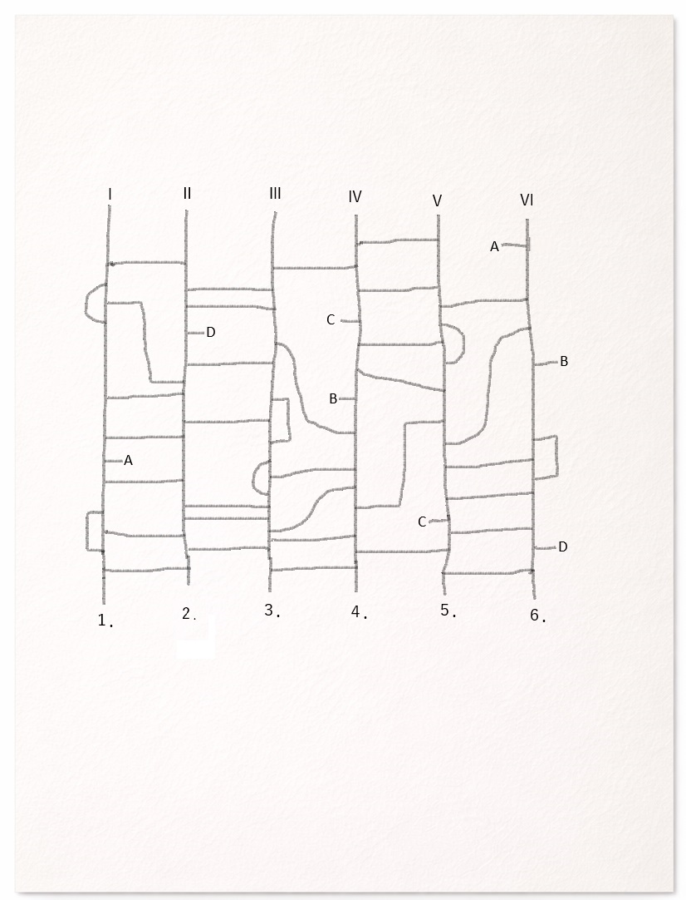

Choose one of the lines from I to VI.
Click the result to jump to that epilogue.
How to Use the Ladder Lottery
Follow your chosen line from top to bottom.
Always turn when you reach a horizontal branch.
When lines merge, continue downward.
If you reach a letter, jump to the matching letter elsewhere on the chart.
At places where a branch crosses another line inside a semicircle or square, continue straight through if you came from above. If you entered from the branch, return the way you came.
